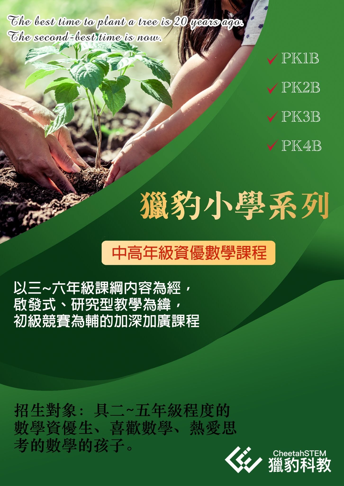

『獵豹PK線上家長座談會-與宗翰老師有約』
參加對象:
PK班系
新/舊生家長（1A,2A,3A,4A 和1B,2B,3B,4B)
活動說明:
參與PK課程的學生家長，都是重視啟蒙教育、高識遠度之人。
子女在小學階段的父母 除了關心孩子眼前的學習，更心繫著他們長遠的發展及未來的規劃。
宗翰老師杏壇耕耘三十餘載，投身資優教育二十多年，作育英才無數，桃李滿天下，學生遍佈海內外，許多已在各行業展露頭角，位居要職，也與他一直保持著聯繫。
透過長期觀察這些學生的成長與後來的發展，近身接觸過各式各樣天賦異稟的孩子，教導過許多不同升學方向的學子，宗翰老師有別於一般教師，對於教育有更高更廣的視野與思考。
對於因應現今世界潮流及未來趨勢演變，我們應該如何為孩子架構一幅宏觀的學習藍圖，宗翰老師有深刻的看法。

本活動不限於孩子的數學學習諮詢，家長亦可就自己孩子國內外升學、教育、學習規劃…提問，在座談會中與宗翰老師討論、交流。
參加方式：
於PK班群 或 PK直播群 接龍報名，每3~6位家長一組，每組40分鐘，可匿名，不需要開鏡頭，額滿為止。
活動時間：
11月初晚上，請見PK班群或本次PK直播群公告。
應許多家長要求，讓孩子可以複習PK直播中老師講解的題目，開放索取回放，需要PK直播回放煩請按讚留言+1喔!
獵豹小學資優數學已經公告，歡迎參加!
［班別］
PK1B:三年級(下)資優數學課程
PK2B:四年級(下)資優數學課程
PK3B:五年級(下)資優數學課程
PK4B:五六年級(下)資優數學課程
※PK3A/B/C/D為兩年上完5、6年級課程，PK4A/B為一年上完5、6年級的加速課程。
※PK3D和PK4B結束後均可接獵豹J71A國七課程
https://www.facebook.com/groups/695697124716309/permalink/1159838008302216/